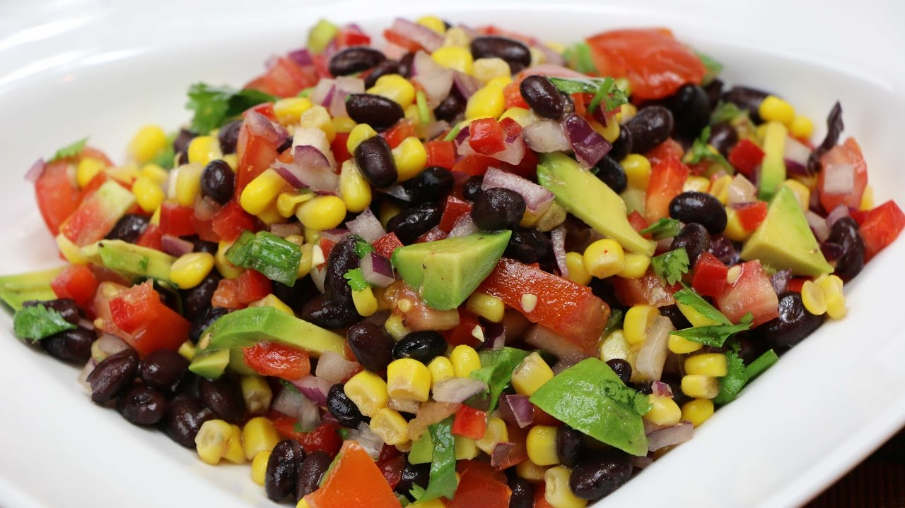

Black Bean Salad Recipe

Description
This is a quick and easy black bean and corn salad. It's healthy and tastes great. This black bean salad makes for a great summer side dish.
Ingredients
- 30 oz Black Beans (drained)
- 30 oz Whole Kernel Corn (drained)
- 1 Red Bell pepper
- 1/2 cup Cilantro
- 1 Red Onion
- 1 Green Onion
- 1 Avocado
- 2 Tomatoes
- 2 cloves Garlic
- 1/4 cup Olive Oil
- 1/3 cup Lime Juice
- 1 tsp Salt
- 1/8 tsp Cayenne Pepper
Steps
- Juice the limes and set them aside for later
- Chop the garlic, green onion, red onion, cilantro, bell pepper, avocado, and tomatoes.
- For the dressing, combine the olive oil, lime juice, garlic, salt, and cayenne pepper.
- Place cap on the container of the dressing and shake until well combined.
- In a large bowl combine corn, black beans, and all of the vegetables. Add the dressing and mix well.